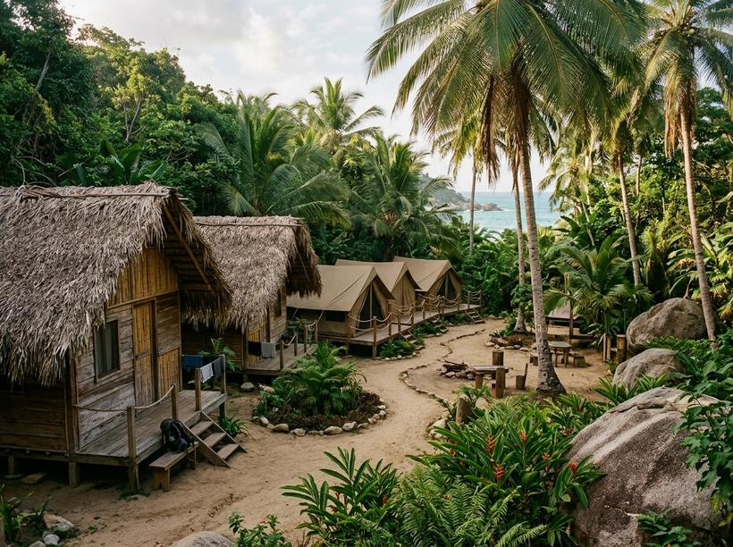

Duerme en el Tayrona o escapa un día a Cartagena e Isla Barú
Reserva camping o cabañas con y sin aire acondicionado desde $175.000 por noche, o súmate al pasadía Cartagena + Barú por $185.000 con recogida en la puerta de tu hospedaje.
Recogida en tu puertaPasamos por tu casa u hotel en Santa Marta al salir.
Dos horarios a BarúElige salida 3:00 AM o 7:00 AM desde El Rodadero.
Camping o cabaña con A/COpciones en el Parque Tayrona desde $175.000/noche.
Reserva por WhatsAppConfirmas cupo, fecha y precio en minutos al +57 300 000 0000.
Dos experiencias desde Santa Marta
Elige tu plan y confirma disponibilidad en WhatsApp
Trabajamos dos rutas concretas que conocemos palmo a palmo: hospedaje dentro del Parque Tayrona y el pasadía a Cartagena e Isla Barú.
Especialidad de la agencia

Parque Nacional Natural Tayrona
Camping y Cabañas en Tayrona
Desde
$175.000 COP / noche
Despierta frente a la selva y camina temprano a las playas antes de que lleguen los grupos del día. Saliendo desde Santa Marta eliges entre zona de camping, cabaña ventilada sin aire o cabaña con aire acondicionado.
✓Camping equipado: tarifa base desde $175.000 COP por noche.
✓Cabañas sin aire acondicionado: frescas, en madera y palma natural.
✓Cabañas con aire acondicionado: descanso total tras la caminata por el parque.
✓Ideal para: parejas, amigos o viajeros que quieren vivir el amanecer en el Tayrona.
Aprovecha tu estadía en Santa Marta para conocer Cartagena y nadar en las aguas claras de Isla Barú en un solo día, con salida organizada en el horario que prefieras.
✓Dos turnos de salida: 3:00 AM (aprovecha todo el día) o 7:00 AM desde El Rodadero.
✓Recogida en puerta: pasamos a buscarte a la puerta de tu casa u hotel en la salida.
✓Regreso en El Rodadero: te dejamos en El Rodadero al volver; el trayecto final a tu alojamiento va por tu cuenta.
✓Ideal para: quienes tienen pocos días en Santa Marta y quieren sumar Cartagena y Barú.
Transparencia en el regreso: te recogemos en tu dirección al salir, y al volver finalizamos el recorrido en El Rodadero para que te traslades cómodamente a tu punto de origen.
Horario de atención: lunes a viernes de 8:00 AM a 5:00 PM y sábados de 8:00 AM a 2:00 PM. Si escribes fuera de horario, te respondemos a primera hora.
Sin letras pequeñas
Cómo funciona la recogida y el regreso desde Santa Marta
Nos gusta dejarte clara la logística antes de que reserves, para que organices tu día con tranquilidad y sin sorpresas al volver.
1
Confirmas tu punto en WhatsApp
Nos compartes la dirección de tu casa u hotel en Santa Marta y eliges tu fecha. Para Cartagena y Barú escoges salida 3:00 AM o 7:00 AM.
2
Te recogemos en la puerta al salir
A la hora acordada pasamos a buscarte directamente a la puerta de tu alojamiento para iniciar el recorrido hacia el Tayrona o hacia Cartagena y Barú.
3
El regreso finaliza en El Rodadero
Al volver del recorrido te dejamos en El Rodadero, zona central con transporte constante. Desde allí el traslado final de regreso a tu casa u hotel va por tu cuenta.
¿Tienes duda si tu hotel o barrio entra en zona de recogida? Envíanos tu ubicación por WhatsApp y te confirmamos la hora exacta de paso en menos de 5 minutos en horario laboral.
Comparativa de precios, modalidades, horarios y logística de los planes de Tayrona Travel
Detalle
Camping y Cabañas Tayrona
Pasadía Cartagena e Isla Barú
Precio en COP
Desde $175.000 COP por noche (tarifa varía según camping, cabaña sin A/C o cabaña con A/C).
$185.000 COP por persona (tarifa fija de pasadía).
Modalidad / Duración
Estadía por noches dentro del Parque Nacional Natural Tayrona.
Excursión ida y vuelta en el mismo día.
Punto y horario de salida
Salida coordinada desde Santa Marta según fecha de ingreso al parque.
Salidas desde El Rodadero, Santa Marta en dos turnos: 3:00 AM y 7:00 AM.
Recogida y retorno
Coordinación directa de salida desde Santa Marta por WhatsApp.
Recogida en la puerta de tu casa/hotel a la salida; regreso finaliza en El Rodadero (retorno final corre por cuenta del pasajero).
Cómo reservar
Directo en WhatsApp al +57 300 000 0000 sin formularios.
Directo en WhatsApp al +57 300 000 0000 sin formularios.
Lo que destacan quienes ya viajaron
Claridad al reservar y puntualidad en la salida
4,9 sobre 5 basado en 318 viajeros atendidos desde Santa Marta. (*Reseñas ilustrativas de demostración pendientes de validación con el cliente)
★★★★★
“Elegimos cabaña con aire acondicionado en el Tayrona después de caminar todo el día y valió cada peso. Todo se cuadró por WhatsApp en diez minutos.”
★★★★★
“Tomamos el pasadía a Cartagena y Barú en el turno de las 3:00 AM. Pasaron puntuales por la puerta del apartamento y al volver en El Rodadero tomamos taxi rápido.”
★★★★★
“Nos gustó que desde el principio dijeron exactamente cuánto cuesta y cómo funciona el regreso al Rodadero. Sin sorpresas ni cobros ocultos.”
Guía práctica desde Santa Marta
Cómo ir al Parque Tayrona en 2026: camping o cabaña, precios y qué empacar
Antes de viajar revisa cuándo conviene dormir en camping, cuándo compensa pagar cabaña con aire acondicionado y qué llevar en la mochila para caminar cómodo.
En el pasadía a Cartagena e Isla Barú, ¿por qué el regreso termina en El Rodadero?+
A la ida pasamos a recogerte en la puerta de tu casa u hotel para que salgas puntual a las 3:00 AM o 7:00 AM sin buscar transporte de madrugada. Al regresar, el vehículo finaliza en El Rodadero para agilizar la llegada de todos los viajeros; desde allí cada pasajero toma su transporte hacia su lugar de origen.
¿Cuál es la diferencia entre camping, cabaña sin aire y cabaña con aire en el Tayrona?+
El camping arranca desde $175.000 COP por noche y es la alternativa más económica para vivir el parque de cerca. Si prefieres cama firme y mayor privacidad, la cabaña sin A/C ofrece ventilación natural; la cabaña con aire acondicionado es la más buscada en temporada cálida para descansar fresco tras las caminatas.
¿Qué turno conviene más para Cartagena e Isla Barú: 3:00 AM o 7:00 AM?+
El turno de las 3:00 AM te permite llegar temprano a Cartagena y aprovechar más horas de playa en Isla Barú. El turno de las 7:00 AM funciona mejor si viajas con niños pequeños o prefieres descansar más antes de salir. Ambos tienen tarifa de $185.000 COP por persona.
¿En qué horario atienden consultas y cómo se aparta el cupo?+
Atendemos directo por WhatsApp (+57 300 000 0000) de lunes a viernes de 8:00 AM a 5:00 PM y sábados de 8:00 AM a 2:00 PM. No manejamos formularios: nos escribes tu fecha y cantidad de personas, verificamos disponibilidad y te indicamos cómo confirmar tu reserva.
Cupos sujetos a fecha
¿Listo para coordinar tu salida desde Santa Marta?
Escríbenos ahora por WhatsApp y te confirmamos disponibilidad para camping, cabañas en el Tayrona o pasadía a Cartagena e Isla Barú.